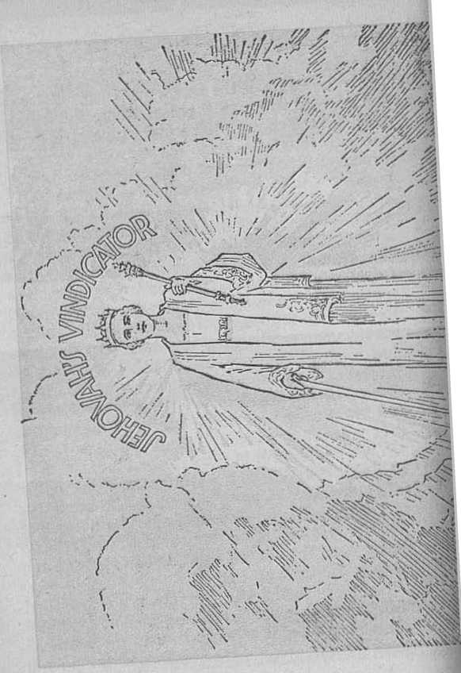
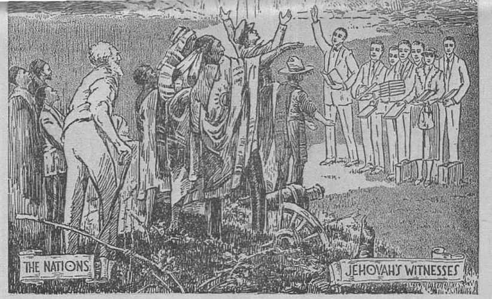

explained in Three Bible Treatises by
J. F. RUTHERFORD
Page
3 Preface
5 The True God
24 The Mimic God
45 Why Serve Jehovah
•>---------------------------+
Judge Rutherford’s lectures, which are heard by millions of people weekly, along with his many publications, have greatly .aided the people of good will in the study of God’s Word, lie has written 58 different publications, and in the last twelve years these have reached the amazing distribution of over 100 million copies.
♦-------------------------------------------------------(■
CoPYttiriniED 1933 AND PUBLISHED BY WATCH TOWER BIBLE AND TRACT SOCIETY International Bible Students Association Brooklyn, N. Y., U. S. A.,
Branch Offices:
London, Magdeburg, Paris, Toronto, Strathfleld, Capo Town, Berne, Copenhagen, Stockholm, and other cities.
Made in U.S.A.
PREFACE
THE END OF THE WORLD has been reached, and Christ Jesus the great Judge and King, although invisible to human eyes, is present, dividing the people. He has committed a portion of his testimony to his faithful followers, revealed to them the truth, and commanded them to speak out the truth plainly, and to thus enable the people to choose which side they will take. The Lord himself illustrates the opposing sides by goats and sheep. The vu’ong side is pictured by a flock of goats and their leader; the right side is pictured by a flock of sheep and their leader. This dividing work now in progress is in fulfilment of the prophecy uttered by Jesus, to wit: "When the Son of man shall come in his glory, and all the holy angels with him, then shall he sit upon the throne of his glory: and before him shall be gathered all nations; and he shall separate them one from another, as a shepherd divideth his sheep from the goats: and he shall set the sheep on his right hand, but the goats on the left.” (Matthew 25; 31-33) Which side will you take?
The three lectures following were broadcast over a coast-to-coast network of radio stations. The demand for copies of these lectures is so great that they are published in convenient 3
PREFACE
form. They make manifest the True God and the false god, and how Christ the great Judge is now dividing the people. These lectures will enable you to determine the side you will take. Study them carefully with the Bible.
1933
Publisher
THE PURPOSE of this speech and the two on following Sundays is to bring to the attention of the people information that is of the greatest importance to all men. Great distress is now not only upon the people of America, but on the peoples of the entire world. Even greater distress is certain to follow in the near future. The reason thereof and what will be the final outcome are directly related to the great questions for consideration on the occasions mentioned. The correct understanding will bring consolation to your heart. For this reason I invite you to listen with unbiased mind to these speeches.
Is there a supreme God in whose hand is the destiny of all of the nations and peoples? If so, nothing else could be of such importance to all of us. Who is the true God? and what is his purpose concerning man ? How may we get the true and satisfactory answer to these questions? A correct answer must be found in the testimony that is reliable and trustworthy, and given by witnesses that are entirely competent.
Primarily there are two kinds of witnesses that bear testimony, and, these being reliable, they fully corroborate each other. The things which we see with our eyes, but which do not speak with audible voice, do by their very existence bear testimony to a Creator. This kind of testimony we call the physical facts. If an honest man gives testimony by his speech, or by what he writes, we receive that as proof; and if his testimony is corroborated by the physical facts, such is the strongest proof that both are correct.
There are millions of stars which we see with the natural eyes. When we gaze into the great vault above the earth and behold these astral bodies we know that they bear testimony that there is a supreme power who put them there. With wonder and admiration and in awe we ask: Who made the myriad of stars? Who placed the sun in the heavens to give light by day and the moon to shine at night to cheer the way of the weary traveler? Who made the mountains that for centuries have lifted high their heads amongst the clouds? The very existence of these mighty things bears eloquent testimony that they are the handiwork of the great Creator. It will not do to say that nature created them, because nature means the creation that is visible to human eyes. ‘Things spiritual’ means that which is not seen by human eyes. Who, then, created
the visible and the invisible things? There is a sacred record which says God created the heavens and the earth, the things seen and unseen. —Genesis 1:1.
But, one will ask, how do we know that the sacred record is true and correct? Because competent witnesses bear testimony to its truthfulness and the very language of that record proves that the record emanates, not from man, but from the supreme One. That sacred record is the Bible, and which is the Word of the true God given to man for his instruction.
It is a matter of history and general knowledge that approximately nineteen centuries ago there lived on earth a man of great wisdom, who spoke as no other man ever spoke and whose speech was true. The name of that man is Jesus. When he stood before the Roman governor and gave testimony he said that he came to earth for the very purpose of bearing testimony to the truth. As to what constitutes the truth and where the truth is to be found Jesus said that the Bible, the sacred record, the Word of God, it is the truth. (John 17:17; 18: 37) Centuries previous thereto faithful men, at the dictation of God, had written the prophecies of the Bible, and which prophecies foretold the coming of Jesus, the time and place of his birth, and the work that he would do. No human mind could have preconceived these things; hence it must be conceded that the writers thereof wrote at the dictation of God and that the Bible is what it claims to be, GOD’S WORD OF TRUTH.
It is not an uncommon thing for a boy to learn from his father the early history of the United States, and this before the child is able to read. From the time of the first man to Moses information concerning the human race was handed down from one generation to another, even as the events of American history are given from one generation to another. The first five books of the Bible were written by Moses, wherein is made known the true God and his name and his purpose that he would accomplish through his beloved Son Jesus. When Jesus was on earth he testified and said: 'Moses wrote of me.’ The Bible bears abundant testimony that Jesus is the Son of the true God; therefore the testimony of Jesus is true and imports absolute and complete verity. (Luke 9:35; John 1:34) Moses, and the other prophets thereafter, likewise testified to the truth; and the history of the world, as well as the Bible, makes record of their work.
Jesus had with him on earth faithful men to whom he committed the truth, and directed them to write a record thereof, which they did. In that sacred record written under inspiration are found these words, in Ephesians 4: 5, 6: ‘There is one God, the Father of all, who is above all, and one Lord and Savior Jesus Christ.’
Concerning the prophecies and whence they came it is written, in 2 Peter 1:21: “For the prophecy came not in old time by the will of man: but holy men of God spake as they were moved by the holy [spirit].”
The testimony of these faithful and true witnesses proves beyond all question of doubt that the book called the Holy Bible contains the sacred Word of the true and almighty God. At 2 Timothy 3:16 it is written: ‘All scripture is given by inspiration of God for the instruction of man in righteousness The Scriptures, therefore, must be a true and correct guide for man in all matters pertaining to humankind. Such is the truth, and any teaching that is contrary to the Holy Scriptures is not the truth. We therefore have the physical facts, tradition and the testimony of competent men all agreeing that there is one true God.
Men who claim to be wise teach that human creatures evolved from a lower order of animal; but that teaching is not true, for the reason that the Scriptures declare that God created the first man in his image and likeness, and that man was perfect, and that God gave man the power to bring forth children. The physical facts show that this statement of the Scriptures is true. It is reasonable to expect that God would give to his most intelligent creature on earth a record or revelation of the truth concerning Himself; and that is exactly what he has done in the Bible. Therefore the reverential man is caused to say, as recorded at Psalm 119:105: “Thy word is a lamp unto ray feet, and a light unto my path,” by which I am guided in the right way.
It is distressing to observe what great ignorance there now is amongst the people concerning the true God. Many who say they believe in a Supreme Being have no conception of the true God. It is written in Psalm fourteen: “The fool hath said in his heart, There is no God.” Mark this, that he did not speak with his mouth, but in his heart he said, “There is no God.” The heart is the seat of motive, and therefore a man by his course of action discloses what is in his heart. If he is wholly given over to selfishness, and refuses to hear anything about God and his purpose, he thereby discloses his motive and thus he speaks in Iris heart and says, “There is no God.” Such a man in his own estimation is always right; hence he rejects instruction, and the Lord declares him to be a foolish man.
Many men excuse themselves with the statement that they have read the Bible and know it cannot be right, when the fact is they know nothing about the Bible, having merely casually looked at some parts of it, and hence are wholly incompetent to express an opinion concerning the Bible. It is written therein (Psalm 25:14): “The secret of the Lord is with them that fear him; and he will shew them his covenant.” A man who does not fear God cannot learn. Disregarding the Scriptures and following the teaching of man has led many people into the depths of ignorance concerning the true God and his purpose.
The great erisis has now been reached, which means that the time Jias come for a change, and to those who profit by the knowledge available the change will bo for their good. It is written that greater light shall come upon the peoples at die end of the world. We reached the end of the world in 1914, and since that time greater light has been shed upon the name of the true God and his purposes concerning man. This increased light is available to all who honestly seek for the truth in God’s appointed way. It is written that it is the will of God that all men shall be brought to a knowledge of the truth. (1 Timothy 2:4-6) The due time to bring man to a knowledge of the truth has now begun. Furthermore, the prophet of God wrote: ‘The earth shall be filled with the knowledge of the glory of God even as the waters cover the sea.’ (Habakkuk 2:14) The knowledge of God’s glory means a manifestation of himself and Iris purpose, and this loiowledge shall become as apparent to those who seek it as the fact that the waters fill the sea. By his prophet Ezekiel the Almighty declares more than sixty times that ‘in that day they shall know that I am God’.
The time for the beginning of the great increase of knowledge concerning the true God having come, that is the very reason -why many radio stations this day broadcast a message from the Scriptures, and the reason why men and women go about the land with books explaining the Bible. The purpose is not to induce other people to join some earthly organization, but merely to afford them an opportunity to come in contact with that which will enable them to see the truth and hence to understand the meaning of present-day events. This is done at the commandment of the Lord, and hence must be done regardless of all opposition. —Matthew 24:14.
The Creator of the universe is eternal, existing from everlasting to everlasting. (Psalm 90:2) To his creatures he reveals himself by several names or titles, each of which has a deep significance, and to these X briefly refer. His name God means that he is the Creator of heaven and earth and all things that are good. He is known as the “Father of lights”, because all light and life emanate from him. (James 1:17; 1 John 1: 5) He is revealed as tliewlfo.s'4 High, because he is above all. He reveals himself as the Almighty God, meaning that there is no limitation to his power and nothing can successfully resist him. He designates himself as the “Lord of hosts”, which means that he is the Almighty Warrior, who successfully fights against his enemies when the time comes for him to act for that purpose. His name Jehovah is the most significant, because that means his purpose toward his creatures.
Pharaoh of Egypt, the great world ruler, when confronted by Moses as the representative of Jehovah, scornfully asked Moses: “Who is Jehovah?” Even to this day men in high positions likewise sarcastically speak of his name and ask, Who is Jehovah? When the true God sent Moses to Egypt as his representative, to Moses he said (Exodus 6:3): “And I appeared unto Abraham, unto Isaac, and unto Jacob, by the name of God Almighty; but by my name JEHOVAH was I not known to them.” Jehovah then proceeded to tell Moses his purpose concerning the people, and later Moses, under the direction of Jehovah, wrote down in the Bible God's expressed purpose.
The name of the true God, which is Jehovah, is the most important question at issue before the peoples of earth today. For this reason he expresses his purpose of bringing this great truth to the attention of the people. The importance of the name Jehovah is magnified above everything, and this is shown by the words of Jesus. Just before his crucifixion Jesus said (John 1.7 : 3) : “This is life eternal, that they might know thee the only true God, and Jesus Christ, whom thou hast sent.” It is therefore certain that it is necessary to know Jehovah the true God in order to learn the way to everlasting life.
When God created the perfect man he made his mighty creature Lucifer the overseer or overlord of man. Lucifer rebelled and became Satan and led man into disobedience of God’s law, and for which wrong man was sentenced to death. For this reason all mankind by inheritance have been suffering the results of the death sentence. (Romans 5:12) Jehovah God then expressed his purpose to redeem all men from death, and to give each one an opportunity to know the truth and to obey him and live, or disobey him and die and remain dead for ever.
To Abraham Jehovah God appeared and gave promise that he would raise up a seed, by and through which seed all the families of the earth shall be blessed. (Genesis 12: 3) The Scriptures disclose that the seed thus promised is The Christ, whose shed blood purchased the right for the human race to have life. (Galatians 3:16-29) For this reason God’s Word declares that there is no other name under heaven whereby men can get life.—Acts 4:12.
By the mouth of his holy prophets Jehovah expressed his purpose to set up on earth a kingdom or government that will rule the world in righteousness, and that all who shall become obedient to the laws of that government or kingdom shall live for over on earth in peace, prosperity and happiness. The one whom Jehovah has appointed and anointed as the ruler, of that kingdom or government is Christ Jesus. When Jesus was on earth he declared that he spoke not his own message but spoke only the message that his Father Jehovah gave him to speak. He always emphasized the importance of God’s kingdom for the blessing of men. Just before his death he declared that he must die and be raised from the dead and that in due time he would return again, receive unto himself his faithful followers, and set up his kingdom or government, and take charge of the affairs of the world. He further declared that Jehovah the true God would thus begin to execute his purpose at the end of the world; and that fixed time has now arrived, and hence we may look for the convincing evidence of the great change from an unrighteous rule to a righteous government. The people desire such a government and they must receive knowledge thereof.
Jehovah having expressed his purpose by his Word, his name stands for his expressed purpose; therefore the importance of his name is magnified. He has a fixed time for the execution of his purpose, at which time his name must be proved true and vindicated before all creation. Jehovah God sent Moses to Egypt, not merely to help the Israelites, but chiefly to make a name for himself. (2 Samuel 7:23) The miraculous deliverance of the Israelites from Egypt bore testimony to the supreme power of Jehovah; hence that was a testimony to his holy name. He made the Israelites his witnesses that Ihoy might bear testimony before others to the end that others might learn that Jehovah is the only true God, from whom must flow the blessings to all creation. In Isaiah 44:6 it is written: “Thus saith the Lord, the King of Israel, and his redeemer the Lord of hosts; I am the first, and I am the last; and beside me there is no God.”
Only a small number of the Israelites proved to be true witnesses of Jehovah. The groat mass of them became unfaithful. The nation was cast away, and the privilege of being Jehovah’s people taken away from that nation. Then Jehovah sent to earth his beloved Son, Christ Jesus. I What was the primary purpose of the coming of Jesus to earth? Was it merely that he might provide an example for other men to follow? Surely not that alone. Jesus himself answered the question in these words: “To this end was I born, and for this cause came I into the world, that I should bear witness unto the truth. Every one that is of the truth heareth my voice” and therefore does likewise. (John 18:37) Jesus came to bear witness to the truth of and concerning the true God Jehovah and his purpose, that the name of Jehovah might be made known and vindicated in due time before all creation. For this reason Jesus Christ at all times emphasized the name and the purpose of his Father, Jehovah. Because of his faithfulness as a witness to the name of Jehovah he was given the title of "The Faithful and True Witness”. (Revelation 3:14) Every true follower of Christ
Jesus must be a witness for Jehovah, because Jehovah and Jesus have so declared.
There is a company of men and women in the land today who are designated Jehovah’s witnesses and about whom many professed Christians speak with contempt and disdain and who are regarded as unworthy of decent treatment. Permit me to give some information as to why these faithful men and women are designated as witnesses of Jehovah God.
The Israelites or Jews having failed to be true witnesses to the name of God, Jehovah sent Jesus to the earth; and with his disciples God began to take out from the other nations of the earth a people for his name. It is written (Acts 15:14-16, Weymouth) that ‘God looked graciously on die other nations to take out from them a people for his name, and that afterwards he would set up his kingdom’. The Scriptures then show that the taking of those witnesses out from the nations would be completed at the end of the world. Also that they must be witnesses to the name of Jehovah in order that others might learn who is the true and almighty God and his purpose. This testimony these witnesses must bear according to the commandment of Jehovah.
How do they get the name Jehovah’s witnesses? Do they name themselves? That question I will now answer from the Scriptures. At 1 Peter 2: 2.1 it is written that every true follower must do as Jesus did. Since Jesus is the chief witness of Jehovah, the others taken out from the nations by the Lord must also bear witness to the name of Jehovah. God then declares that he names them as his witnesses. At Isaiah 62:2 Jehovah says to the faithful followers of Jesus: "Thou shalt he called by a new name, which the mouth of the Lord [Jehovah] shall name.” Since they are taken out from the nations to be witnesses to the name of Jehovah, and since they must hoar testimony to his name at the end of the world, there could be no more appropriate name for them than that of Jehovah’s witnesses. They are witnesses of the true God.
Jehovah then declares that he would give his own name to the faithful followers of Christ Jesus as his witnesses and that he would give it to no other and that these should be his servants and bear testimony to his purpose. To them he says: "I am Jehovah, that is my name, and my glory to another [aside from you] will I not give.” (Isaiah 42:6-8, Roth.) Thus we see that Jehovah confers his name upon those who are his faithful witnesses.
We all know that today is a time of great confusion and distress throughout the earth, The people arc in great perplexity and distress because they are blind to the truth and know not just what to do. If they would know the truth, they must learn, not of men, but of Jehovah, as disclosed by his Word. His witnesses must bring these great truths to the attention of the people.
Note now it is written by Jehovah’s prophet Isaiah (43:8,9), the following: "Bring forth the blind people that have eyes, and the deaf that have ears. Let all the nations be gathered together, and let the people be assembled: who among them can declare this, and shew us former things? let them bring forth their witnesses, that they may be justified: or let them hear [Jehovah’s Word], and say, It is truth,” that is in his Bible. Then to his faithful servants or witnesses the true God says (Isaiah 43:10-12, 71.1?.y.): "Ye are my witnesses, saith Jehovah, and my servant whom I have chosen; that ye may know and believe me, and understand that I am he; before me there was no God formed, neither shall there be after me. I, even I, am Jehovah; and besides me there is no saviour. I have declared, and I have saved, and I have showed; and there was no strange god among you: therefore ye are my witnesses, saith Jehovah, [that] I am God.” Almost all people today follow after the mimic god about which I will tell you.
This day, and the days following, faithful men and women eall at your homes, exhibiting to you the message of Jehovah God concerning himself, his name, his purposes and his kingdom. This they do because they have agreed to do God’s will, and the Lord gives this commandment, saying to them: "This gospel of the kingdom shall be preached in all the world for a witness unto all nations; and then shall the end come.”—Matthew 24:14.
These witnesses are the true friends of the people, because they come, not with the message of man, but with the message from the true God. Recently a great storm was sweeping in from the sea. The United States government hurriedly sent out a warning to the people who were in the line of the storm, warning them to (lee. Some of them obeyed the warning and escaped. Others disregarded the warning, and died, Jehovah declares that when the testimony ol his witnesses is completed then there shall follow a time of trouble, or a great cataclysm, upon the nations such as the world has never known ; and he now sends his witnesses to give warning to the people thereof in order that the people of good will might take their stand on the side of Jehovah God and live. Some will heed the message, but many will not. (Matthew 24:16-22) Long ago Jehovah the true God fixed a time limit in which wickedness should have a free hand among men, and time and again he has declared in his Word that at the end of that lime limit he will completely destroy the workers of wickedness and will completely sot up his government of righteousness in the earth. What is the purpose of destroying the wicked rule of the world and setting up in peace a righteous government? The answer is given in Psalm 83:18, in these words; “That men may know that thou, whose name alone is JEHOVAH, art the most high over all the earth.”
The name of Jehovah God must be vindicated and all creation come to a knowledge of the fact that he is the fountain head of life and everlasting happiness. Those who receive such knowledge will greatly profit thereby. Regardless of the good intentions of men, and regardless of their strenuous efforts to bring about a desirable condition amongst the people, they cannot succeed. The crisis has come and Jehovah God has decreed that his own righteous government under Christ shall now be put in operation, and that government alone is the hope of the world; hence the vital importance of knowing the name and purpose of the true God at this time.
But why, some will ask, will a just and true God let the people have so much suffering and sorrow and distress as they are now having? Why has he brought such great trouble upon the people? The answer is that Jehovah God is in no wise responsible for the present-day sufferings of humankind. He is not the cause of their trouble, distress and suffering, and the economic depression upon the world. He is the just and loving God, and all of his ways are right and righteous.
The truth concerning these questions is of the greatest importance to all of us. We cannot get too much truth. Any attempt to prevent one from speaking to the people on these vital questions is wrong and results injuriously to the people. Our fighting amongst ourselves can result in no good to anyone. If a man wants to express his view, give him the opportunity to he hoard, and then judge his words by the Bible, which is the truth. I often call attention to false doctrines, not for the purpose of holding men np to ridicule or to do them injury, but only that the people may examine the Word of God and learn the truth. I have no fight with men who publicly through the press or otherwise oppose me. They are entitled to their own opinion; but coercion, putting a gag in anyone’s mouth, or preventing him from speaking, is ungodly and therefore wrong. If you want to hear what they say, do so, and then determine for yourselves what is the truth. The opinion of man, regardless of the position ho holds in any organization, and the reputation of any organisation on earth are of small importance. The truth of and concerning God's purposes is of all importance to you and to me. The time has come when the people must learn the clear distinction between the true God and the mimic God. Those who would now find life and attending blessings must know the truth.
Next Sunday at this hour it will be my privilege to point out to you the conclusive proof that the suffering of the peoples has come by reason of the works of the mimic god ; that the mimic god has built a great and cruel organization which has oppressed the people and kept them in ignorance and caused them great distress ; and to point out the truth as to what shall be the end thereof. The time has come when the people must have an opportunity to learn the truth, and those who do willingly seek the truth, and who do right, have Jehovah’s sure promise that they may be spared in the great tribulation that is shortly to come upon the whole world. Joining some organization of men will do you no good, but to know the true God will put yon in line for boundless blessings. Be assured of my best wishes for you, that you may live in peace and happiness. I strongly urge that when Jehovah’s witnesses call at your homes you avail yourselves of the opportunity to learn more about the true and everlasting God, whose name alone is Jehovah.
But Why Wait Until Called On?
Just a few lines above Judge Rutherford lias stated that he strongly urges “that when Jehovah’s witnesses call at your homes you avail yourselves of the opportunity to learn more about the true and everlasting God, whose name alone is Jehovah”, It may be a week, a month, eleven longer, before one of Jehovah’s witnesses calls upon you, but one will sooner or later. However, why not at once drop a card to The Watch Tower, 117 Adams St., Brooklyn, N. Y., and ask for their catalog which describes in detail all of Judge Rutherford’s writings as well as beautifully illustrates his books? This free catalog also sets out the nature of the work carried on by the Society, which will be of interest to you and at the same time will aid you in deciding what other publications you would like to read shortly. THE PUBLISHERS.
A MIMIC is one who imitates or tries to be like another, but is a counterfeit of the true, and who ridicules and tries to bring the true one into disrepute. The mimic god is the one who attempts to be like the true Almighty Jehovah and who is therefore a counterfeit of the true God and who ridicules Jehovah, defames his great name, attempts to bring him into disrepute, and thereby deceives many persons.
Having established in my former address the proof that the Bible is God’s Word of truth, and the only fountain of truth concerning man, now attention is given to the mimic god. Jehovah God created perfect man and woman and gave them the power to bring children into existence. (Genesis 1:27,28) At the same time he made Lucifer the overlord of man, and it was Lucifer's duty to see that man kept in harmony with Jehovah’s organization of righteousness. Lucifer became covetous. He knew that life was given to man by Jehovah and that man’s duty is to always obey and be subject to Jehovah. He saw the possibility of a great and numerous race of human creatures upon the earth and he determined to commercialize that race and bring it into subjection to himself. That was the root of evil.—1 Timothy 6:10.
Jehovah, the true God, made Lucifer the head over an organisation including man, and it is 24 written that Lucifer was perfect in all his ways till he became lawless, and his lawlessness was made manifest by making merchandise of man. (Ezekiel 28:13-19) Lucifer’s motive or wicked heart is made known by his action, and therefore it is written of him in God’s Word: “0 Lucifer, . . . thou hast said in thine heart, I will ascend into heaven, I will exalt my throne above the stars of God: I will sit also upon the mount of the congregation, in the sides of the north: I will ascend above the heights of the clouds: I will be like the Most High. Yet thou shalt be brought down to hell, to the sides of the pit.” (Isaiah 14:12-15) It was there that Lucifer became the mimic god, and ever since he has tried to ape Jehovah’s organization, to ridicule Jehovah's name, and to do violence to those who have served Jehovah the true God.
That wicked one caused man to sin and to turn away from Jehovah, and for that reason man was sentenced to death and death has passed upon all men. (Genesis 3:1-15; Romans 5:12) Then Jehovah changed Lucifer’s name, and since he has been designated by the names, to wit, Satan, meaning opposer of God; Devil, meaning slanderer of God’s holy name ; Serpent, meaning deceiver of other creatures; and Dragon, meaning the one who seeks to devour all who try to serve the true God.—Revelation 20:2; 1 Peter 5:8; John 8: 44.
Having caused Adam and Eve, the perfect ones, to fall away from Jehovah, Satan then defied God and challenged him to put on earth a man who would at all times remain faithful and true to Jehovah. Satan declared that he could cause man to suffer so much that he would curse God to his face. (Job 2: 3-7) That challenge of the wicked one put in dispute or at issue before all .creation the word, the power and the supremacy of Jehovah God and hence involved his great name. God could have destroyed Satan immediately, but that would not have settled the question in the minds of other creatures. Jehovah therefore accepted the challenge of the wicked one and suffered or permitted Satan thereafter to put forth all his efforts in his attempt to prove his side of the issue. Jehovah set a fixed time limit in which he would not interfere with Satan’s wicked course, declaring that at the end of such fixed time he would show his absolute power, his perfect wisdom, and his equal justice, and that all this would be a vindication of his word and his name. All the wickedness, crimes and sufferings that mankind have experienced from Eden till now are due to the works of the chief criminal, Satan the Devil, who is the mimic god. Jehovah God has never ' brought sufferings upon his creatures. He has punished those who have willingly violated their covenant with him, but as to the sufferings of mankind in general God is in no wise responsible for such.
From the time of Eden Jehovah began to mark some mon for himself. The first one was Abel, and Satan caused him to be murdered. It is the duty of all men to serve and worship the true God; and Satan, knowing this, set about to cause men to practice the worship of creatures, that he thereby might turn men away from the great Creator Jehovah. Religion lias ever been one of the means employed by Satan to turn men away from Jehovah. At Shinar Satan organized the first religious company and put Nimrod forward as leader and exalted him above Jehovah. Satan caused the people to build the tower of Babel for the announced purpose of going to heaven, all of which was done to ridicule Jehovah. (Genesis 10:9; 11:1-9) As the peoples of the earth grew in numbers other religions were organized by Satan, and in every instance those religions were a mockery of and against Jehovah God.
Seemingly Satan was turning all the people away from Jehovah God, but at all times God had on earth a few faithful witnesses to his name. Jehovah then organized the peoples of Israel as a people for himself, and in order to safeguard them from the wicked influence of Satan Jehovah gave them this commandment: “Thou shalt have no other gods before me. Thon shalt not make unto thee any graven image, or any likeness of any tiling that is in heaven above, or that is in the earth beneath, or that is in the water under the earth: thou shalt not bow down thyself to them.” (Exodus 20:3-5) The worship and bowing down before men or manmade things is an insult to Jehovah and is done at the instance of the mimic god.
Jehovah made the Israelites or Jews his witnesses in the earth and favored them as he had never favored another people. Over a long period of more than eighteen centuries God dealt mercifully with that people. (Amos 3:2) Time and again they violated their covenant with him, and in the days of King Zedekiah they had so completely yielded to the Devil that Jehovah cast away the Jewish nation from him. (Ezekiel 21:24-27) From that time onward Satan the Devil has been the god or invisible ruler of the world, and, as it is written of him, The whole world lies in the wicked one.’—1 John 5:19, Diaglott.
In due time Jehovah sent his beloved Son Jesus to the earth, first to bear witness to the name of Jehovah and to redeem mankind by his own sacrifice, and later to return and set up his government of righteousness and to vindicate Jehovah’s name. When Jesus began his witness work in the earth Satan at once tried to induce Jesus to bring about his own destruction by proving unfaithful to God. In this Satan completely failed. (Matthew 4:1-11) The primary purpose of the coming of Jesus was to prove and vindicate his Father’s name. To this end he went forth preaching to the people concerning Jehovah’s purpose. In order for Jesus to prove Jehovah’s side of the question at issue he must suffer the contradiction and opposition of Satan and his agents and he must, under such adverse conditions, maintain his integrity towards Jehovah, and this he did. Satan resorted to fraud, deceit and all manner of wicked persecution to bring about the destruction of Jesus and to cause further reproach upon the name of Jehovah.—Romans 15: 3; Psalm 69:9.
Not every person who claims to serve Jehovah God does so in fact. It is written: KYc shall know them by their fruits”; meaning that if they bring to the people their own fruits or teachings or the fruits or teachings of any man they are not God’s servants. If they bring to the people God’s pure Word, such fruits or teachings testify that they are the servants of God. Even though the Jews had been east away by Jehovah, yet the rabbis, Pharisees and other religious leaders among them claimed to serve God, and probably they thought they were serving him, but they were in fact the servants of the Devil. The testimony of Jesus is authority for this conclusion. In John 8:41-44 it is written that the Pharisees said to Jesus: “We have one Father, even God. Jesus said unto them, If God were your Father, ye would love me: for I proceeded forth and came from God; neither came I of myself, but he sent me. Why do ye not understand my speech? even because ye cannot hear my word. Ye are of your father the devil, and the lusts of your father ye will do. He was a murderer from the beginning, and abode not in the truth, because there is no truth in him. When he speaketh a lie, ho speaketh of his own; for he is a liar, and the father of it.”
These words of Jesus brand Satan as the chief deceiver of men and the one who carries on the practice of false religion amongst men even in the name of God, which is done for the very purpose of ridiculing Jehovah. He deceives men and uses them as his dupes. The Jewish religious leaders vehemently claimed that they were the servants of God, but Jesus told them that they were the servants of the Devil. That being true, it is not at all unreasonable to expect that other organizations will and do operate under the name of God and his Christ and at the same time are the servants of Satan the Devil. It is for the people to judge for themselves by the teachings or fruits which are brought to them by men of such organizations. The real reason for these false religions is that men are deceived by the Devil and by him are made blind to the truth. Satan is a subtle enemy and resorts to all manner of deceptions to turn men away from Jehovah God and to hide the truth from them, because that is his chief business and work in order to try to prove his side of the question at issue and to discredit Jehovah. Men
may be acting with the best intention and yet be the servants of the Devil, and for that reason the apostle wrote to those at Rome the following: “Know ye pot, that to whom ye yield yourselves servants to obey, his servants ye are to whom ye obey; whether of sin unto death, or of obedience unto righteousness?”—Romans 6:16.
When I say that men are serving the Devil and not Jehovah God I do not mean to he harsh, but I am merely calling attention to the methods that Satan uses to deceive men, and this 1 do for the benefit of all who desire to learn the truth of God's Word, which is for their benefit. Repeatedly the Scriptures refer to Satan, the mimic god, as the arch deceiver who deceives and misleads men. If men with the very best intention follow the teachings of other men and disregard the Word of God they are certain to fall into the trap of Satan and hence become his servants. It is written, in 2 Corinthians 11:14, 15: “Satan himself is transformed into an angel of light. Therefore it is no great thing if his ministers also be transformed as the ministers of righteousness; whose end shall be according to their works.” They appear outwardly to be servants of the God of light, but in fact are the servants of Satan.
The mere fact that a religion which is called “Christian" is practiced among us is no evidence whatsoever that it is according to the truth of God’s Word. Why is there amongst the people
THE NATIONS.
JJHOVAHT V/ITNESSEf
“In His Name Shall the Nations Hope.’’ Matthew 12:21, Roth. Pages 17,41.
such a great lack of knowledge of and concerning Jehovah God, his Word and his kingdom? The answer is found in the Scriptures, and that answer is, because Satan the god of this world has made the people blind to the truth. Note the words of the apostle who says, at 2 Corinthians 4: 3-5: '‘But if our gospel be hid, it is hid to them that are lost; in whom the god of- this world hath blinded the minds of them which I c Sieve not, lest the light of the glorious gospel of Christ, who is the image of God, should shine unto them. For we preach not ourselves, but Christ Jesus the Lord; and ourselves your servants for Jesus’ sake.” If men of an organization preach the doctrines of men they are not preaching the truth of God’s Word; hence they are deceived and others are deceived by the machinations of the mimic god, Satan, whose chief objective is to reproach Jehovah’s name and to turn men away from the true God.
What is the purpose of Satan, the mimic god, in turning the people away from the truth and into darkness? Satan would much prefer to see the entire human race destroyed than to see anyone thereof faithfully serve Jehovah God. In no other way could he prove his side of his wicked challenge. Satan the Devil, being himself the father of lies, opposes the truth always, and thereby deceives men and fraudulently induces them to oppose the truth. There are religious organizations and their leaders who would in this day vigorously oppose the broadcasting of the words of Jesus as written in the twenty-third chapter of Matthew.
Why would any religious organization so oppose the radio's being used to proclaim the truth of God’s Word as it is written ? The answer is, because Satan, the mimic god, and who is ‘’’the god of this world”, is opposed to the truth and he deceives men and causes them to act as opposers to the truth and against their own welfare. Instead of becoming angry with one another when these matters are mentioned we should be able to speak the truth with frankness. We should all want to have the truth before us in order that we might avoid that great enemy who is against all of us, and who is seeking to turn the whole human race against the true God. The apostle Paul had the right idea when he wrote under inspiration: ‘Let the truth be told even though it make all men liars.’ (Romans 3:4) The apostle was not there abusing men, but he was magnifying the importance of the truth; and it is only the truth of God’s Word that will shield us from the assaults of the mimic god, who is Satan the Devil. For this reason Jesus declared: ‘Sanctify them with the truth; thy Word is truth’; and again he said: “The truth shall make you free.”—John 8:32-36; 17:17.
If we believe the Bible is true, then we must know that the Devil for centuries has been the invisible ruler of this world. The proof is found in both the Old and the New Testament and is especially emphasized by the testimony of Jesus Christ. (John 12:31; Daniel 2:1-45; 4:1-25) Does that mean that the men who govern have willingly and with full knowledge put themselves under the Devil’s control? No, it means nothing of the kind. Men have followed their own understanding in the organizations and conduct of governments and have ignored the Bible and have easily fallen under the deceptive influence of Satan. Commerce, politics and religion have joined together in forming and carrying on the governments of the world. These have followed the advice of other men, and that to the exclusion of God's Word of truth. Many a man today is heard to say, 'T believe in God”; but the difficulty is, he does not know Jehovah, the true God, and, having an inclination to bow to a supreme power, he falls a victim to Satan's seductive influence. Instead of saying that the governing powers have knowingly followed Satan, the correct thought is that Satan has overreached them, because they have failed to follow God’s Word. Let it be kept in mind that the Devil’s primary purpose is to turn men away from the true God and in order to do so he employs fraud and deception and leads men of good intention into his trap. l(,or that reason the nations today are in a great dilemma.
All of us well know that the most influential religious organizations and leaders on earth today tell the people that the world depression, suffering and distress is a judgment from God upon the people because of their unfaithfulness to the church. There is nothing farther from the truth than such a statement. The world is suffering and is in great distress, and this is not due to anything that the true God has done. Nor is it possible that men by their prayers can remove or even aid in the present depression, suffering and distress. The world depression and its attending sufferings are due to the wicked works of the Devil, the mimic god, and this I will now prove from the Scriptures; and this I do in order that the people may see the true situation and (loo to the only refuge.
Jehovah appointed Christ Jesus to be the vindicator of his name and raised him up out of death, exalted him to the highest place in the universe, and clothed him with all power and authority. Jehovah fixed a specific time in which he would permit the Devil to do all within his power to prove his wicked challenge; therefore Jehovah God said to Jesus, as stated in the Scriptures, ‘Wait until my due time to put the enemy under thy feet.’ (Psalm 110:1,2; Hebrews 10:12,13) That fixed time of waiting ended in 1914, and then .Jehovah sent forth Jesus to rule, and his first work was to oust Satan from heaven. (Revelation 12:1-10) The next great act is the destruction of the Devil and his organization. Preparation is now in progress to that end, and that will be accomplished at Armageddon,
How do we know that the true God will destroy Satan, the mimic god, and his organization ? Because his final judgment is written in the Scriptures to that effect, from which I quote: “ I will destroy thee . . , and . . . bring thee to ashes. . . . All they that know thee among the people shall bo astonished at thee: thou shalt be a terror, and never shalt thou be any more.” (Ezekiel 28:16-19) This final judgment of Jehovah will he executed in the near future. The Devil knows that the fight must come off and that he must get ready for it and that his time is short. Now note the words of the Scriptures concerning this matter: ‘'Woe to the inhabiters of the earth, and of the sea! for the devil is come down unto you, having great wrath, because he knoweth that he hath but a short time.” (Revelation 12:12) This proves beyond all doubt that the Devil has brought the great woe and sufferings upon the peoples of the earth because he knows that his time is short, and he is now using every power at his command to cause the people to curse the true God and turn away from him. Will the Devil succeed in turning all men away from the true Godi He will succeed in turning the great majority away, but there will be many who will maintain their integrity toward the true God and remain faithful.
But one teaches the people one thing, and others another thing, and, you ask, how shall the people know what to believe and which way to turn? The correct answer is found in the Scriptures, which is, to wit: Do not follow what any man says, because all men are imperfect and are selfish and hence are unsafe guides, regardless of their good intentions. In this hour of great crisis Jehovah, the true God, has given the proper advice in these words (Proverbs 3:5,6): “Trust in [Jehovah] with all thine heart; and lean not unto thine own understanding. In all thy ways acknowledge him, and he shall direct thy paths.”
What shall come to pass in the near future? The Bible, the Word of the true God, answers that there shall be great tribulation on earth, such as never before was known, and which shall result in the complete collapse of world organizations. (Matthew 24:21,22; Zechariah 14:12, 13) Why should that great trouble come upon the world? Because the true God has thus decreed it to the end that his judgment may be executed against the enemy and all oppression and wrongdoing on Ilie earth shall cease. The time limit for the Devil to prove his wicked challenge has come to an end; therefore his world has ended and at Armageddon Jehovah by Christ will destroy the wicked organization and completely vindicate his own name. Then all shall know that Jehovah is the true God. The great battle is designated in the Scriptures as the expression of Jehovah God’s wrath at the wickedness of the Devil and his agents.—Revelation 11:18.
Which way shall the people now turn to protect themselves? Let the Word of the true God give answer, as found in Zephaniah 2:2-4, which says: ‘Before the anger of the Lord break, seek meekness and righteousness, and it may be that you shall be hid in this time of trouble.’ Keep in mind that Armageddon is not a battle between men, but that it is a war of the Devil and his forces on one side with Jehovah God and his forces, led by Christ, on the other side, and that in the great battle the world shall be made rid of all wickedness. The only possible way of escape and of protection in that great tribulation is to take your stand on the side of Jehovah, the true God; seek meekness, which means to be willing to be taught by his Word, and not by men; and do righteousness by dealing honestly and right with all men in all matters, and, above all, to put your trust in God and in Christ as his King, who is earth’s rightful ruler.
Does that mean that we must fight against the efforts of men in this day who are trying to pull the world out of the present dilemma of distress and depression? No, it means nothing of the kind. It does mean that those who maintain their integrity toward God will not put their trust in man and in man’s feeble power, but will rely upon the Lord Jehovah and his kingdom, which is now set up under Christ, who is earth’s rightful ruler. Note the Scriptures say (Proverbs 29: 25): “The fear of man bring-eth a snare: but whoso putteth his trust in the Lord shall be safe.” (Psalm 118:8) “It is better to trust in the Lord, than to put confidence in man.” (Psalm 146:3) “Put not your trust in princes [earthly rulers], nor in the son of man, in whom there is no help.”
The true Jehovah God is the God of wisdom, justice and love. The mimic god is the embodiment of wickedness, and the deceiver and oppressor of the people. The time is at hand for his wicked rule and oppression to for ever end. The true God in the exercise of his loving-kindness now sends forth his witnesses to give this warning to the people, that they may have an opportunity to take their stand on the side of Jehovah and maintain their integrity toward him and escape. Jehovah’s witnesses come to you with the message of truth from the Word of Jehovah because they are commanded to do so by the Most High. They can receive no earthly gain by telling you the message. They can maintain their integrity toward God only by being obedient to his commandments and doing so willingly and joyfully. Jehovah’s witnesses now bring to you his words, set alongside the facts which are well known to you, and by which yon can determine what is the truth, and what is the right course to pursue.
This crisis has come upon the world because Satan, the mimic god, is making his final desperate effort to turn mankind away from the true God and to cause their destruction. Men of the world upon whose shoulders the responsibility to rule is now resting are with good intention using their best endeavors to relieve the world. To oppose them in their efforts would be entirely wrong, but a failure to tell the truth to the people would be a far greater wrong. If the present governors of the world wore wise, instead of leaning to human understanding they would turn to the Word of Jehovah God and be guided solely by it. Therein they would learn that the world of the mimic god, Satan, has ended and that his organization must go down and no power can hold it up; that the kingdom of Jehovah, the true God, long ago promised, is here; and that his beloved Son is now setting up the government of righteousness, and concerning whom it is written: 'The government shall be upon his shoulder, and it shall be a righteous government.’—Isaiah 9:6,7.
Jehovah’s witnesses are not opposing the N.R.A. or any other effort of men to relieve the world from distress; but in order to be true to their fellow man, and, above all, to maintain their integrity toward the true God, these witnesses must tell the people the truth, even though by so doing they are greatly misunderstood. We have reached that time specifically mentioned in the prophecy wherein Jehovah God speaks to those who arc his witnesses and says: 'Prepare ye the way of the people, point them to the highway, and lift up a standard for the people.’ (Isa. 62:10) The purpose of this speech, and the purpose of Jehovah’s witnesses’ calling at your homes with Bible instruction, is to obey these commandments from Jehovah and thus bring to the attention of the people the distinction between the true God and the false or mimic god.
It must be conceded by all that if Jehovah's time has come when the organization of this world shall go down to make the way clear for the setting up of his righteous government on earth, then it is not within the power of men to hold together the present institutions. For centuries devout persons have expected the coming of God’s kingdom and have fervently prayed that it might come, and that his will might be done on earth as it is done in heaven. That prayer is not a mockery, but it is true and the true God will shortly answer it. All hopes pinned to man-made schemes will fail, and that shortly. Let the people bear in mind that Jehovah says of and concerning his kingdom under Christ (Matthew 12:18,21, Il.V.): "Behold, my servant whom I have chosen; my beloved in whom my soul is well pleased: I will put my spirit upon him, and he shall declare judgment to the [nations]. And in his name shall the [nations] hope.” Let the people now learn to serve the true God. What advantage will result to the people in so doing? Why serve Jehovah? That question it shall be my privilege to answer from the Scriptures next Sunday at this time.
JUST CONSIDER THIS!
Judge Rutherford’s books had the enormous circulation of over 24 million copies during the past year alone. We list below some of his books and booklets, and, if you wish, you can send in a contribution to the amount mentioned below for the publications you desire.
The Harp of God Deliverance Creation Reconciliation Government
25c each
Books
Life
Prophecy Light, Book 1
Light, Book 2
Vindication, Book Vindication, Book Vindication, Book Preservation Preparation
Any 4 for $1.00
The entire set of 14, $3.50
Booklets
Escape to the Kingdom
The Crisis
The Kingdom, the Hope of the World
Who Is God?
What Is Truth?
Cause of Death
Hereafter
Good News
5c each 6 for
Liberty
The Final War What You Need Health and Life Home and Happiness Keys of Heaven Where Are the Dead? Heaven and Purgatory War or Peace, Which?
25c 13 for 50c
The Watch Tower, 117 Adams St., Brooklyn, N.Y.
FOR many centuries the whole world has been under the domination of Satan, the mimic god. This is not man’s opinion, but the solemn declaration of. God’s Word, the Bible. (1 John 5:19) Almost all men have, to some extent at least, been deceived by Satan and have therefore served him either willingly or unwillingly. When we learn that the Scriptures clearly teach that there are two gods, to wit, Jehovah, the true God, and Satan the Devil, the mimic and wicked god, then we can readily see that every man has been and is the servant either of the true or of the false god. It is written : ‘Ye are the servants of him whom ye serve.’ (Romans 6:16) One may ignorantly serve the Devil, but he is Satan’s servant just the same, regardless of his intention. It is not necessary for us to judge others, but our proper course is to ascertain the truth, that we may take the right way.
What is the general result to the human race by reason of serving Satan for centuries past? The record of the human race is chiefly written in human hlood unrighteously shed. Crime and gross wickedness have stalked through the earth, and the entire race has been brought into great woe. All those who have tried to do right have su ffered at the hands of the Devil, and some of these have maintained their integrity toward 45
God even under the most terrible conditions.
Selfishness and wickedness have ruled for centuries amongst mon; families once happy have been torn asunder; wickedness and sorrow have been upon all, and thousands of millions have gone down to untimely graves, and their departure lias caused a sea of tears of bitterness to flow from those who are left to mourn their loss. Throughout the earth today the marble shafts stand as silent witnesses testifying to the ravages of disease and death.
To whom is this terrible condition chargeable? The Scriptures answer that sin is the cause of death and that Satan the Devil launched sin on its destructive road and has carried it on. Of Satan Jesus declares that he was a murderer from the beginning and abode not in the truth. He is the father of lies and the arch deceiver. {John 8:44) Not only has Satan caused the death of billions of human creatures, but he has brought reproach upon the name of Jehovah God by declaring falsely that there is no death; and that was amongst his first lies. (Genesis 3:4,5) He follows up that falsehood by causing his servants to falsely declare that the dead are alive and in purgatory or torment, and that the prayers of men can aid the dead and remove from them much of their suffering; and by that means many good people have been greatly deceived. Now the tide of truth has begun to rise, because it is God’s due time, and soon the knowledge of the glory of God shall fill the whole earth as the waters now fill the seas. When the people learn the truth, then every good person will rejoice to know that the reign of Satan the wicked one must cease for ever. Jehovah has permitted the Devil to go his limit in his effort to turn all men into wickedness, and, now that time limit having been reached, Jehovah God begins to bring to the people a knowledge of himself that they may know and serve him, the only true God. What advantages are there to men in serving Jehovah, the true God? Why serve Jehovah?
Because all men inherited the result of Adam’s fall all men are imperfect, but even the imperfect and selfish man who is sane desires to see a better condition. What is it that men in general desire above all things else? They desire to live in peace, prosperity and happiness, because such is to their advantage. Any sane man who could be assured of everlasting life and happiness would naturally desire to have that life with all its attending blessings. Jesus Christ, when on earth, spoke with absolute authority, and amongst other things he said (John 17:3): “This is life eternal, that they might know thee the only true God, and Jesus Christ, whom thou hast sent.” It therefore follows that those who would live must get a knowledge of Jehovah and Christ, and in the name of Christ the King must the nations hope.
Adam, the perfect man, had life, and he dwelt in a perfect home which Jehovah had provided for him. By reason of yielding to the Devil Adam lost life and the right thereto, and the effect of his wrongdoing passed upon all the human race, because all descended from Adam. (Romans 5:12) The sentence of Adam to death was just, because he willfully violated God’s law. For his own name’s sake Jehovah gave his word that he would send a redeemer who would purchase by his own perfect lifeblood the right of man to live. The death of Christ Jesus therefore results beneficially to all who will accept this gracious provision for man to live. Therefore it is written (John 3:16): “God so loved the world, that he gave his only begotten Son, that whosoever believeth in him should not perish, but have everlasting life.” Jesus was made a perfect man with the right to live as a man. Satan had declared to God that he could not put a man on earth who would under the stress of suffering remain true to Jehovah. (Job 2: 2-7) In order to prove Jehovah’s side of the controversy the perfect man Jesus must be subjected to persecutions and suffering at the hands of Satan and he must prove his integrity under such suffering. It is written in the Scriptures concerning Jesus (Hebrews 5:8,9): “Though he were a Son, yet learned he obedience by the things which he suffered; and being made perfect, he became the author of eternal salvation unto all them that obey him.” The man Jesus not only knew Jehovah, but obeyed him implicitly, and that under the most adverse conditions, because he was subjected to the worst kind of persecution and to the contradiction of sinners. He proved Jehovah’s side of the issue to be true, proved Satan to be a liar, and proved his own qualification to be the Vindicator of Jehovah’s name and the Savior of the human race. Concerning the advantages that resulted to Jesus because of his faithful devotion and service to Jehovah it is written (Philippians 2: 7-11): “[He] made himself of no reputation, and took upon him the form of a servant, and was made in the likeness of men; and being found in fashion as a man, he humbled himself, and became obedient unto death, even the death of the [cross]. Wherefore God also hath highly exalted him, and given him a name which is above every name: that at the name of Jesus every knee should bow, of things in heaven, and things in earth, and things under the earth; and that every tongue should confess that Jesus Christ is Lord, to the glory of God the Father.”
Jehovah gave Jesus faithful men as his disciples or apostles, and with these God began to take out from amongst the nations “a people for his name” that these, like their Head and Leader, Christ Jesus, might bear testimony to Jehovah’s name and have a part in the vindication thereof. AH men so taken out of the world and who bear testimony to Jehovah's name must also be subjected to the reproaches and sufferings such as fell upon Jesus, and this at the hand of Satan, in order to prove God’s side of the great question at issue. (Romans 15: 3) To those who faithfully serve Jehovah Jesus said: “If they have persecuted me, they will also persecute you. ... All these things will they do unto you for my name’s sake, because they know not him that sent me.”—John 15:20,21.
The faithful apostles of Jesus were sent forth as Jehovah’s witnesses to bear testimony to his purpose. Satan then caused his political and religious agents to persecute and woefully maltreat those faithful apostles. Those men endured groat suffering and, while so doing, maintained their integrity toward Jehovah God. When those faithful witnesses of Jehovah were haled before the courts at the instance of the priests and Pharisees who constituted the religious leaders or clergy of that day, and when they wore told that they must cease preaching the truth, they replied: “Whether it be right in the sight of God to hearken unto you more than unto God, judge ye. . . . We [will] obey God rather than men.”—Acts 4:17-19; 5:29.
Those faithful men were imprisoned and beaten and tortured, and yet they said: We count not our lives dear unto us, so that wo may finish our course with joy.’ (Acts 20: 24) Again the faithful apostle exclaimed: 'I have suffered, the loss of all things that I might he made partaker of the resurrection of Christ Jesus.’ (Philippians 3:8-14) Determined to maintain his integrity toward God under all conditions the apostle further said: ‘I am determined that nothing shall separate me from the love of God, which is in Christ Jesus.’ (Romans 8:38,39) After he had endured all manner of suffering in prison and out of prison he wrote these words (2 Timothy 4:7,8): “I have fought a good fight, I have finished my course, I have kept the faith; henceforth there is laid up for me a crown of righteousness, which the Lord, the righteous judge, shall give me at that day: and not to me only, but unto all them also that love his appearing.” It paid for the apostles to serve Jehovah.
Other men, and women, have been taken out from among the nations of earth to be the followers of Christ Jesus, and this work, beginning with the apostles, continues until the coming of the Lord Jesus and the gathering unto himself of his faithful ones. In 1914 the World War and attending evidences furnished the proof that Christ had begun his reign, and shortly thereafter he began to gather unto himself those taken out from the world as witnesses to the name of Jehovah. The ones gathered to him must also suffer persecution in order to maintain their integrity towards Jehovah and* to prove his side of the question at issue; all of which persecution and suffering came upon them by reason of the wicked work of Satan, the mimic god. In further support of this conclusion note the words of Revelation 12:17, in which it is stated that the testimony has been given to these faithful witnesses, and the Dragon, which is the Devil, “was wroth” with them and goes forth to make war against them because they keep the commandments of God and have the testimony of Jesus Christ.
For these witnesses of Jehovah to now compromise or serve the Devil would mean their complete destruction. They must prove their fidelity to Jehovah under the test. For their faithful service to Jehovah God what advantage results to them? Jesus answered: “Be thou faithful unto death, and I will give thee a crown of life.” (Revelation 2:10) Furthermore, the promise to these faithful ones is that they shall have part in the vindication of Jehovah’s name and live and reign with Christ and be made partakers of immortality and be for ever in the presence of Jehovah, having his everlasting approval. (Revelation 20:4) It is thus seen that it is all to their advantage to serve Jehovah the true God.
Life is sweet to any creature; but dearer to Jehovah’s faithful witnesses than life itself is the fact that they know they are right and have the approval of the true and almighty God, and that they shall be permitted to have a part in serving in his courts, (Zechariah 3:7) To maintain their integrity now these witnesses must be faithful, even though by so doing they are scorned, abused, arrested, imprisoned and maltreated, and their names cast out as the offscourings of the world. Having complete confidence and full assurance of faith, in the true God, they do not permit persecution to deter them in their work of bearing testimony to Jehovah’s name, but look for the final approval of the Host High; and in the language of the apostle they now say: “For which cause wo faint not; . . . for our light affliction, which is hut for a moment, worketh for us a far more exceeding and eternal weight of glory.” (2 Corinthians 4:16,17) They are therefore daily rejoicing in their privileges of serving him, knowing according to God’s further promise that since he has called them according to his purpose, and since they do love and serve him, all things shall work together for their good. (Romans 8: 28) Everything is to their advantage to serve Jehovah.
Satan, the mimic god, is the archenemy of all mankind. For centuries he has fought against righteousness that he might discredit the name of Jehovah, the Most High, and bring the human race into complete degradation and destruction. But in all that time and during all his wicked persecution of men there have been some on earth who have remained true and steadfast to Jehovah God. From Abel to John, the last of the prophets, there was a line of men who served Jehovah amidst great persecution and suffering. They suffered all manner of contradiction and indignities at the hand of the Devil and his agents because they would not violate their covenant with the true God. They maintained their integrity towards Jehovah and at all times faithfully served him. Of them it is written in the Word of God: "[They] had trial of cruel mockings and scourgings, yea, moreover, of bonds and imprisonment; they were stoned, they were sawn asunder, were tempted, were slain with the sword: they wandered about in sheepskins and goatskins; being destitute, afflicted, tormented; (of whom the world was not worthy:) they wandered in deserts, and in mountains, and in dens and caves of the earth.” Because of their faithfulness they all received Jehovah's approval; and it is declared that God is not ashamed to be called their God, and that he has prepared for them a place in his kingdom. (Hebrews 11:16-38) And what advantage will inure to the benefit of those faithful men for their service to Jehovah? The Scriptures answer that they shall be resurrected as perfect men and made the visible representatives of God’s righteous government on earth, and hence shall be visible rulers of the nations of the earth, (Psalm 45:16; Isaiah 32:1) Those men have found the way to everlasting life and usefulness. The advantage to them for serving Jehovah could not be measured by any human rule of value. It paid them to serve Jehovah.
At this day there is another class of people on earth who arc properly designated as the Jonadab class. (2 Kings 10:15-23; Jeremiah 35:6-19) Jehu, who was sent to destroy Devilworship in Israel, was a type of Christ Jesus and his faithful body members. Jonadab joined himself to Jehu when the latter went forth in Jehovah’s service and manifested his zeal for the Lord, and thus Jonadab foreshadowed a class of men now on earth who are known as people of good will because their desire is to do good, to have a righteous government, and to see the name of Jehovah exalted. Such are the ones who today gladly hear the message of God’s Word, and while they have no expectation of going to heaven they sincerely desire to do the will of the true God. These are the ones who now seek meekness by diligently studying the Word of God and coming to a knowledge of him and his purposes. They seek righteousness because they are diligent in trying to do what is right, as set forth in the Word of God. The battle of the great day of God Almighty, otherwise called “Armageddon”, is rapidly approaching, and that will be a time of tribulation on earth such as the world has never known. (Matthew 24:21,22) Will it be at all to the advantage of the Jonadab class in that time of tribulation that they have taken their stand on the side of Jehovah and served him? Jehovah by his prophet Zephaniah answers that it will be to their advantage and that such as seek meekness and righteousness may be hid in that time of his great wrath upon the organizations of earth. (Zephaniah 2:2,3) These persons constitute the same ones mentioned by the prophet when he wrote: "Blessed is he that considereth the poor: the Lord will deliver him in time of trouble. The Lord will preserve him, and keep him alive; and he shall be blessed upon the earth; and thou wilt not deliver him unto the will of his enemies.”—Psalm 41; 1, 2.
Again the same class of persons is designated by the Lord Jesus under the symbol of sheep, that is, harmless ones, to distinguish them from the goats, that is, the cruel and wicked ones amongst men. The cruel goat class are the servants of Satan and they misrepresent and maltreat Jehovah’s witnesses. Jesus likened the faithful members of his body to sheep and then said: “Other sheep I have, which are not of this fold: them also I must bring, and they shall hear my voice.” (John 10:16) These men and women of good will now see Jehovah’s witnesses actively engaged in bearing the message of truth to the people, and they render good unto such witnesses because they are serving the true God. When they see Jehovah’s witnesses suffering the contradiction of sinners and being persecuted at the hands of Satan's agents because of their faithfulness, they minister good deeds unto Jehovah's witnesses. When these faithful ones arc arrested, wrongfully convicted and imprisoned, are sick and afflicted, this company of people, known as sheep or persons of good will, visit and comfort Jehovah’s witnesses. Because they want to serve Jehovah and Christ they are good to Jehovah’s servants. Therefore Jesus pronounces final judgment upon the goats and upon the sheep class; that is to say, upon the wicked persecutors and upon those of good will who minister good to God's people. To the servants of Satan he says: “Depart from me, ye cursed, into everlasting fire prepared for the devil and his angels.” Unto the sheep class, otherwise known as the Jonadab class, Jesus says: “Come, ye blessed of my Father, inherit the kingdom prepared for you from the foundation of the world: for I was an hungred, and ye gave me meat; I was thirsty, and ye gave me drink; I was a stranger, and ye took me in; naked, and ye clothed me; I was sick, and ye visited me; I was in prison, and ye came unto me.” (Matthew 25: 34-36) Let all who hear determine whether or not it is now advantageous to the peoples of earth to serve the Devil, the mimic god, or to serve Jehovah, the true God.
Under the government of Christ all the remainder of the human race must be brought to a knowledge of the truth and learn that Jehovah is the only true and living God. The billions who have gone down into death are not now in purgatory or torment, but they are in their graves, out of existence, and entirely unconscious. In due time all of these shall be awakened out of death and brought to a knowledge of the truth. Concerning them Jesus said (John 5:28,29, A.R.V.): “For the hour cometh, in which all that are in the tombs shall hear his voice, and shall come forth ; they that have done good, unto the resurrection of life; and they that have done evil, unto the resurrection of judgment.”
The shed blood of Christ Jesus provides the redemptive price for all men, and all must have an opportunity to learn of Jehovah’s gracious provision and Iris purpose for their regeneration. Therefore it is written: "There shall be a resurrection of the dead, both of the just and unjust." (Acts 24:15) These are awakened out of death that they may be brought to a knowledge of the truth, because such is the purpose of Jehovah.
The mimic god, Satan, by the exercise of his power of death has filled the whole earth with sorrow. Even in this day there are millions upon earth who are mourning the loss of some loved ones that have been snatched away from them by the enemy death. Jesus Christ, the Vindicator of Jehovah, will destroy Satan and break the bars of the grave and release those who sleep in the dust of the earth. Teeming millions shall come forth from their graves. Families that have been broken up by death shall again be brought together that they may learn of the goodness and loving-kindness of the true God. They will then learn that Jehovah has a gracious gift for all mankind who obey; as it is written: “The gift of God is eternal life, through Jesus Christ our Lord.” (Romans 6: 23) They will learn that there is no other name given under heaven whereby man can obtain life everlasting.—Acts 4:12.
How will the people know then what to believe? and why will they not be deceived by false teachers? The answer is that then there will be no deceivers in existence, the Devil and his agents having been put out of the way. (Revelation 20:1-3) Jehovah ’will turn to the people a pure message, or language, that all may learn the truth, and all who shall call upon his name will learn the way to righteousness and life. (Zephaniah 3: 9) At the present time and for centuries past the people have been kept in blindness concerning the truth, but the promise of Jehovah is that in his kingdom under Christ he will remove and destroy that veil of covering which is now cast over the people and which hides the truth from them, and that then all shall have an opportunity to know and to serve the true God.—Isaiah 25:7.
What will then be the advantage resulting to those who serve Jehovah, the true God, and his King, Christ Jesus? Jehovah gives Iris word that never again shall wickedness arise in the earth to afflict the human race, and that those who obey him shall live. (Nahum 1: 9) Tn Psalm 145: 20 it is written: ‘'The Lord preserveth all them that love him; but all the wicked will he destroy.” To love God means to unselfishly obey and serve him; and to all such his promises are sure that they shall be preserved and shall live forever on the earth, and all others shall be destroyed. Added to the foregoing precious promise is the testimony of Jesus Christ, the great King, concerning those who then obey and serve Jehovah ( John 8:51): “Verily, verily, I say unto you, If a man keep my saying, he shall never see death.” Furthermore, Jesus said: Tie that lives and obeys shall never die.’-John 11:26.
The reign of Christ Jesus, the Vindicator of the true and almighty God, will result in the complete destruction of every enemy of righteousness. It is written, in 1 Corinthians 15: 25, 26: “For he must reign, till he hath put all enemies under his feet. The last enemy that shall be destroyed is death.” In that kingdom of God under Christ “God shall wipe away all tears from their eyes; and there shall be no more death, neither sorrow, nor crying, neither shall there be any more pain: for the former things are passed away”.—Revelation 21:4.
Everlasting life of the obedient servants of Jehovah shall be accompanied by everlasting peace under the true and righteous government. Concerning this it is written: "Unto us a child is born, unto us a son is given; and the government shall be upon his shoulder: and his name shall be called Wonderful Counsellor, The mighty God, The everlasting Father, The Prince of Peace. Of the increase of his government and peace there shall be no end.” Never again will the peoples of earth know war, but they shall dwell in safety and contentment together. •—Micah 4: 3, 4.
Never again in the ages to come shall the peoples of earth be in poverty, want or distress. The obedient ones will be wholly devoted to Jehovah God and serve him. Concerning the government of the King of Jehovah it is written (Isaiah 25:6): “In this [kingdom] shall the Lord of hosts make unto all people a feast of fat things, a feast of wines on the lees, of fat things full of marrow, of wines on the lees well refined.” Peace, plenty, prosperity, health, happiness and life shall be the everlasting portion of those who live and serve the true God, Jehovah.
In the secret place of the Most High there have been revealed to those who love Jehovah certain great truths which they are commanded to proclaim to the nations. (Matthew 10:27) Among such truths revealed are these: That Jehovah is the true God; that Christ Jesus is his anointed King, who is earth’s rightful ruler; that in 1914 he took his office, and his first work was to cast Satan out of heaven; that in 1918 he began to gather the faithful into a compact company and make known to them that Satan lias builded a mighty organization in the earth consisting of religion, politics and commerce; that within a short time the battle of Armageddon will be fought; that, knowing there is but a short time for him, Satan now brings greater burdens upon the people; that in order to vindicate His holy name and save the people the battle of Armageddon will result in the complete destruction of Satan’s organization, including all the nations of the earth; that the people must now be notified, and that such notice or testimony will be given amidst great opposition, but will be given just the same; and that such notice is not a threat, but is a solemn warning and those who hear it may receive it or reject it; take it or leave it.
For more than two years it has been my privilege to address the people by radio concerning God’s kingdom, which truth they so greatly need at this time. These speeches do not contain my message, but do contain the expression of Jehovah’s purpose which he commands must now be told to the people. To now prevent the broadcasting of these speeches would mean to wrongfully deprive the radio stations of a legitimate income, and to prevent the people from hearing
the truth, and, above all, would be a defiance of Jehovah’s specific command. The power, official and unofficial, that is now being wrongfully used to accomplish that unjust thing Jehovah may permit to succeed, for a time, in order to thus compel certain ones to openly identify themselves as his enemies. The truth, however, will continue to come to you. Already hundreds of machines with electrically transcribed speeches are in the land, and these will he employed in halls and other public places to freely convey to you the message of God’s kingdom. There is no power that can successfully resist the Almighty God.
The issue is clearly drawn between the true God and the mimic god. The major portion of you have not been serving the true God, because you have been misled by your enemy Satan. The responsibility now rests upon you to choose to serve either Jehovah and his King or Satan. As Joshua spoke to the peoples of Israel, who foreshadowed "Christendom”, so now his words are appropriate to those of "Christendom”, to wit: 'If it seem vexations to you to serve Jehovah, choose you this day whom you will serve, whether Satan or Jehovah.’ (Joshua 24:15, Rotherham) Those who take Satan’s side and oppose Jehovah’s truth shall die; those who serve Jehovah shall live forever and obey and honor his holy name.
■jiiiiiinfiiiiiiiiiiriiiiiiii<iuni:iiiiiirriiii!>niiniiiifintTni8nnminiiiinnnnnnmniinmnnnTnnnTin
The Headquarters of the
WATCH TOWER BIBLE & TRACT SOCIETY and the International Bible Students Association are located at
117 Adams Street, Brooklyn, N. Y,
Address of the Society’s branches In other countries:
Argentina, Calle Cramer 4555, Buenos Aires Australia, 7 Beresford Rd., Strathfield, N.S.W, Austria, Halbgasse 26, Vienna VII
Belgium, 66 Rue de VIntendant, Brussels Brazil, Av. Celso Garcia 951, Sao Paulo
British Guiana, Box 107, Georgetown, Dcmerara Canada, 40 Irwin Ave., Toronto 5, Ont.
Chile, Ejercito 238, Santiago
China, Box 1903. Shanghai
Czechoslovakia, Smichov, Tylova ul. 16, Praha II
Denmark, Sondre Fasanvej 56, Copenhagen England, 34 Craven Terrace, London, W. 2 Estonia, Suur Tartu - Maantee 72-3, Tallinn Finland, Vainamoisenkatu 27, Helsinki
France, 129 Faubourg- Poissonnicre, Paris IX Germany, Waehtturmstrasse, Magdeburg
Greece, Lombardou 44, Athens
Hawaii. Box 681, Honolulu
Holland, Postbus 51, Haarlem
India, 40 Colaba Rd., Bombay
Jamaica, B.W.L. 151 King St., Kingston
Japan, 58 Ogikubo, 4-Chome, Suqinamiku. Tokyo Java, Post Box 59, Batavia Centrum
Korea, 1-129 Sedaimon-Cho, Seoul
Latvia, Cesu lela 11 Dz. 25, Riga
Lithuania, AukStaidiij g-ve 8. b. 1, Kaunas Mexico, Calzada de Melchor Ocampo 71, Mexico, D.F.
New Zealand, Box 252, Wellington
Norway, Inkognitogaten 28, b., Oslo
Poland, Rzgowska ul. 24, Lodz
Rumania, Str, Crisana No, 33, Bucurestl 2 South Africa, Boston House, Cape Town Spain, Apartado de Correos 321, Madrid
Straits Settlements, Post Box 566. Singapore Sweden, Luntmakaregatan 94, Stockholm Switzerland, AHmendstrasse 39, Berne
Trinidad. B.W.L, Box 194, Port of Spain
West Africa, 15 Aponghon St., Lagos, Nigeria Yugoslavia, Vlsegradska ul. 15. Beograd
niiduuiiUhiutniiiimiiiuiinniinniii!iniiiuniUi>iiutui>uii>iHHiiiiiMhiii)iiimi'iinii|ii<uiiiiiiimuiHiiiiiiiimnmiiitininiiitriinuuiiiutniiiiitw:unnininiiUitiiiiiiiiiiJiinMiuiimiiiiiiriiiiiimiuniiitiniiiinmuuic
Please write direct to the Watch Tower Bible & Tract Society nt the above addresses for cost of our literature in those countries. Some of our publications are printed in 60 languages.
7iunnniiiiii)iatiiiit:iuiiuniiiiitnuiiiratiiniitiiiiiiiiiuiiiiiiiinniiiiiimiMiiiuniiiiimiiJiiHnii<minniininitiiiimnr)niiiwtitimiiuiiuiimn)iiiii:miiimi<(